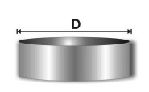
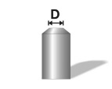
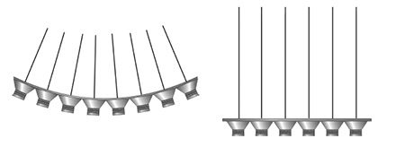

(1) Kann das Auftreten gefährlicher explosionsfähiger Gemische mit Maßnahmen nach Anhang I Nummer 1.6 Absatz 1 GefStoffV nicht sicher verhindert werden, sind gemäß Anhang I Nummer 1.6 Absatz 3 Satz 1 GefStoffV Schutzmaßnahmen zu ergreifen, um eine Zündung zu vermeiden. Gemäß Anhang I Nummer 1.6 Absatz 2 Ziffer 2 GefStoffV sind die Wahrscheinlichkeit des Vorhandenseins, der Entstehung und des Wirksamwerdens von Zündquellen vor dem Hintergrund der Wahrscheinlichkeit und der Dauer des Auftretens gefährlicher explosionsfähiger Gemische zu beurteilen. Bei der Festlegung der Schutzmaßnahmen ist von einem ständig vorhandenen gefährlichen explosionsfähigen Gemisch auszugehen, sofern in der Gefährdungsbeurteilung für den Einzelfall nichts anderes festgelegt ist. Werden explosionsgefährdete Bereiche nicht in Zonen eingeteilt, sind Schutzmaßnahmen im Sinne der Zone 0 bzw. 20 zu treffen, soweit in der Gefährdungsbeurteilung nichts anderes festgelegt wurde. Bei der Festlegung von Schutzmaßnahmen kann sich der Arbeitgeber auf Szenarien abstützen, wie sie z. B. für Beschichtungsarbeiten in engen Räumen in TRGS 507 beschrieben sind, wenn diese auf den zu beurteilenden Fall übertragbar sind.
(2) Gemäß Anhang I Nummer 1.6 Absatz 3 Satz 2 GefStoffV kann der Arbeitgeber bei der Festlegung von Maßnahmen nach Absatz 1 explosionsgefährdete Bereiche nach Anhang I Nummer 1.7 GefStoffV in Zonen einteilen. Die Anforderungen an die Schutzmaßnahmen zur Vermeidung von Zündquellen richten sich dann nach der Wahrscheinlichkeit des Auftretens gefährlicher explosionsfähiger Atmosphäre. In explosionsgefährdeten Bereichen, die gemäß Anhang 1 Nummer 1.6 Absatz 3 Satz 2 GefStoffV in Zonen eingestuft sind, sind zu vermeiden:
Bei der Festlegung, wie häufig eine wirksame Zündquelle auftreten kann, ist die tatsächliche Dauer des Prozesses oder Arbeitsschrittes bzw. -verfahrens maßgeblich, nicht das Kalenderjahr.
(3) Sofern im Explosionsschutzdokument unter Zugrundelegung der Ergebnisse der Gefährdungsbeurteilung nichts anderes vorgesehen ist, sind in explosionsgefährdeten Bereichen gemäß Anhang 1 Nummer 1.6 Absatz 3 GefStoffV, in denen Maßnahmen zur Zündquellenvermeidung erforderlich sind, Geräte und Schutzsysteme entsprechend der Explosionsschutzprodukteverordnung (11. ProdSV) in Verbindung mit der Richtlinie 2014/34/EU auszuwählen (siehe Tabelle 1).
Tabelle 1: Zuordnung Gerätekategorie – Zonen gemäß Abschnitt 5.1 Absatz 2
| in Zone | verwendbare Gerätekategorie | ausgelegt für |
| 0 | II 1 G | Gas/Luft-Gemisch bzw. Dampf/Luft-Gemisch bzw. Nebel |
| 1 | II 1 G oder 2 G | Gas/Luft-Gemisch bzw. Dampf/Luft-Gemisch bzw. Nebel |
| 2 | II 1 G oder 2 G oder 3 G | Gas/Luft-Gemisch bzw. Dampf/Luft-Gemisch bzw. Nebel |
| 20 | II 1 D | Staub/Luft-Gemisch |
| 21 | II 1 D oder 2 D | Staub/Luft-Gemisch |
| 22 | II 1 D oder 2 D oder 3 D | Staub/Luft-Gemisch |
| G = Gase, Dämpfe oder Nebel | D = Staub oder Staubschichten | |
(4) Der vom Gerätehersteller in der Betriebsanleitung der Geräte vorgesehene Einsatzbereich, z. B. bezüglich Umgebungstemperatur, Druck, Temperaturklasse, Explosionsgruppe, ist dabei zu beachten.
(5) Müssen in explosionsgefährdeten Bereichen gemäß Anhang I Nummer 1.6 Absatz 3 GefStoffV Arbeitsmittel verwendet werden, die als Zündquelle wirksam werden können, z. B. Kraftfahrzeuge, Schweißgeräte, Messgeräte, so ist dafür zu sorgen, dass während der Verwendung gefährliche explosionsfähige Atmosphäre nicht auftreten kann. Dies kann bei Gasen und Dämpfen messtechnisch z. B. durch Gaswarngeräte überwacht werden.
(6) Können innerhalb einer gefährlichen explosionsfähigen Atmosphäre mehrere Arten von brennbaren Gasen, Dämpfen, Nebeln oder Stäuben, z. B. auch hybride Gemische, zeitgleich auftreten, sind die Schutzmaßnahmen zur Vermeidung von Zündquellen gemäß Anhang I Nummer 1.6 Absatz 2 Satz 2 GefStoffV auf die Zündempfindlichkeit der jeweiligen Zusammensetzung abzustimmen. Es gilt als ausreichend sicher, wenn die Schutzmaßnahmen zur Vermeidung von Zündquellen auf die zündempfindlichste Einzelkomponente ausgelegt sind. Satz 2 gilt bei hybriden Gemischen nicht für die Zündquellen "optische Strahlung" und "Ultraschall". Für die Zündquellen "optische Strahlung" (im Sinne Abschnitt 5.10 dieser TRGS) und "Ultraschall" (im Sinne Abschnitt 5.12 dieser TRGS) sind bei hybriden Gemischen die maximal zulässigen Energiewerte durch Messung zu bestimmen. (Brennbare Gase und Dämpfe können gemäß DIN EN 60079-0:2014-06 in Verbindung mit ISO/IEC80079-20-1:2015 in Explosionsgruppen eingeteilt werden. Die Explosionsgruppen charakterisieren auch die Zündempfindlichkeit für elektrische und elektrostatische Entladungen und für mechanische Zündquellen).
(7) Bei gefährlichen explosionsfähigen Atmosphären aus Gasen und Dämpfen besteht die Möglichkeit, Gaswarneinrichtungen oder prozessleittechnische Einrichtungen (PLT) einzusetzen, um einige der im Folgenden beschriebenen Zündquellen abzuschalten (siehe TRGS 725). Bei der Verwendung von Gaswarneinrichtungen ist TRGS 722 Abschnitt 2.5.1 zu beachten. Sicherheitsrelevante MSR-Einrichtungen, die nicht der Vermeidung von Zündquellen von Geräten im Sinne der Richtlinie 2014/34/EU dienen, sind keine Sicherheits-, Kontroll- oder Regelvorrichtung im Sinne der Richtlinie 2014/34/EU.
(8) Elektrische Produkte für den persönlichen Gebrauch, z. B. Armbanduhren, Hörgeräte, Langzeit-EKG-Aufnehmer, müssen ebenfalls hinsichtlich ihrer Zündgefahr betrachtet werden.
(1) Ziel der Schutzmaßnahmen ist die Verhinderung der Entzündung explosionsfähiger Atmosphäre durch das Wirksamwerden einer heißen Oberfläche als Zündquelle. Kommt explosionsfähige Atmosphäre mit heißen Oberflächen (heiße Rohrleitungen, Heizkessel usw.) in Berührung, kann es zu einer Entzündung kommen.
(2) Grundlage der Bewertung ist die nach Norm bestimmte Zündtemperatur der die explosionsfähige Atmosphäre bildenden Stoffe. Es ist jedoch zu berücksichtigen, dass die Zündfähigkeit einer heißen Oberfläche u. a. von der Art und der Konzentration des jeweiligen Stoffes im Gemisch mit Luft, von Größe und Gestalt des heißen Körpers und vom Wandmaterial abhängt. Explosionsfähige Atmosphäre kann z. B. im Inneren größerer erhitzter Räume durch heiße Wände mit deutlich niedrigerer Temperatur als die nach Norm bestimmte Zündtemperatur des Brennstoffs entzündet werden. Zur Entzündung explosionsfähiger Atmosphäre an heißen konvexen Körpern ist eine höhere Wandtemperatur erforderlich; sie nimmt z. B. an Kugeln oder an geraden Rohren mit abnehmendem Durchmesser zu. Die nach Norm bestimmte Zündtemperatur ist für die meisten Fälle der Praxis für die Entzündung an konvexen Körpern eine sichere Grenztemperatur. Beim Vorbeiströmen explosionsfähiger Atmosphäre an erhitzten Oberflächen kann zur Entzündung eine höhere Wandtemperatur erforderlich sein.
(3) Neben betriebsmäßig heißen Oberflächen wie z. B. Heizkörpern, Trockenschränken, Gehäusen von mechanischen oder elektrischen Geräten, Dampfleitungen, Reaktionsapparaten können auch mechanische Vorgänge durch Reibung oder Spanabhebung, z. B. Bohren, Sägen, im Bereich der beanspruchten Oberflächen zu gefährlichen Temperaturen führen. Insbesondere bei Vorhandensein von gefährlicher explosionsfähiger Atmosphäre der Explosionsgruppe IIC können auch durch Schlag- und Reibvorgänge, bei denen aufgrund der Werkstoffkombination, z. B. bei Edelstahl mit über 12,5 % Chromanteil, oft keine Funken erzeugt werden, abgetrennte Partikel erhöhter Temperatur oder heiße Oberflächen als Zündquelle wirksam werden. Auch an Arbeitsmitteln, die mechanische Energie in Verlustwärme überführen, d. h. alle Arten von Reibungskupplungen und mechanisch wirkenden Bremsen, z. B. an Fahrzeugen und Zentrifugen, kann es deshalb zu betriebsbedingten heißen Oberflächen kommen. Weiterhin können deshalb drehende Teile in Lagern, Wellendurchführungen, Stopfbuchsen usw. bei ungenügender Schmierung zu Zündquellen werden. Wenn sich Teile in engen Gehäusen drehen, können auch durch Eindringen von Fremdkörpern in den Spalt zwischen drehendem Teil und Gehäuse oder durch Achsverlagerungen Reibvorgänge stattfinden, die unter Umständen schon in kurzer Zeit sehr hohe Oberflächentemperaturen hervorrufen.
(4) Elektromagnetische Strahlung kann durch Absorption zu gefährlicher Temperaturerhöhung z. B. eines Werkstücks oder Reaktionsprodukts führen (beispielsweise bei Strahlungstrocknern), siehe auch Abschnitt 5.9 und 5.10.
(1) In Abhängigkeit von der vorliegenden Zone darf die maximale Oberflächentemperatur von Anlagenteilen, die in Kontakt mit explosionsfähiger Atmosphäre stehen können, einen bestimmten festgelegten Sicherheitsabstand (siehe Abschnitt 5.2.3 bis 5.2.8) zu der der Temperaturklasse zugehörigen Grenztemperatur oder zur Zündtemperatur nicht unterschreiten.
(2) Die in Abschnitt 5.2.3 bis 5.2.8 genannten Temperaturgrenzen dürfen in besonderen Fällen, z. B. bei sehr kleinen heißen Oberflächen, überschritten werden, wenn gesicherte Erkenntnisse vorliegen, dass keine Entzündung zu erwarten ist.
(3) Wenn sich bei der Gefährdungsbeurteilung ergibt, dass unterhalb der genormten Zündtemperatur eine Entzündung der Atmosphäre nicht auszuschließen ist, z. B. in großen konkaven Gebilden wie Behältern mit einheitlicher Oberflächentemperatur, müssen die zulässigen Temperaturen der Oberflächen, die mit explosionsfähiger Atmosphäre in Berührung kommen können, im Einzelfall festgelegt werden.
(4) Bei Geräten und gegebenenfalls bei Komponenten und Schutzsystemen nach der Explosionsschutzprodukteverordnung (11. ProdSV) in Verbindung mit der Richtlinie 2014/34/EU wird die maximale Oberflächentemperatur vom Hersteller bei seiner Zündgefahrenbewertung ermittelt. Wenn Geräte, Komponenten oder Schutzsysteme der Kategorien 1G bis 3G nach Explosionsschutzprodukteverordnung (11. ProdSV) mit Temperaturklasse, niedrigster zulässiger Zündtemperatur einer explosionsfähigen Atmosphäre oder den explosionsfähigen Atmosphären, für die sie geeignet sind, gekennzeichnet sind, sind Sicherheitsabstände zu der Zündtemperatur bereits berücksichtigt, so dass sie ohne weitere Sicherheitsabstände in den entsprechenden gefährlichen explosionsfähigen Atmosphären eingesetzt werden dürfen. Im Gegensatz dazu sind Geräte der Kategorien 1D bis 3D mit der maximalen Oberflächentemperatur ohne Einrechnung eines Sicherheitsabstandes gekennzeichnet. Für die Einhaltung des Sicherheitsabstandes in diesem Fall siehe Abschnitt 5.2.6 bis 5.2.8.
(5) Brennbare Gase und Dämpfe werden nach ihrer Zündtemperatur in Temperaturklassen eingeteilt. Für explosionsfähige Atmosphären aus Stoffen einer Temperaturklasse ist in der Regel der jeweils untere Wert der Zündtemperatur ihrer Temperaturklasse die Grundlage für die Festlegung der maximal zulässigen Oberflächentemperaturen (siehe Tabelle 2).
Tabelle 2: Zusammenhang zwischen Temperaturklasse und Zündtemperatur
| Temperaturklasse | Zündtemperatur (TZ) in °C |
| T1 | > 450 |
| T2 | 300 < TZ ≤ 450 |
| T3 | 200 < TZ ≤ 300 |
| T4 | 135 < TZ ≤ 200 |
| T5 | 100 < TZ ≤ 135 |
| T6 | 85 < TZ ≤ 100 |
(1) In Zone 0 dürfen sich Oberflächen – selbst bei selten auftretenden Betriebsstörungen – nicht gefährlich erwärmen. Dazu muss durch wirksame Überwachung und Begrenzung sichergestellt und durch Kontrolle der Wirksamkeit nachgewiesen sein, dass die Temperaturen der Oberflächen, die mit gefährlicher explosionsfähiger Atmosphäre in Berührung kommen können, 80 % der Zündtemperatur oder des zur Temperaturklasse gehörigen unteren Wertes der Zündtemperatur nicht überschreiten. Dabei sind auch Tem-peraturerhöhungen durch z. B. Wärmestau und chemische Reaktionen zu beachten.
(2) Absatz 1 Satz 1 gilt beispielsweise als erfüllt, wenn die zulässige Temperatur durch den Sattdampfdruck einer Flüssigkeit sicher eingehalten ist (Dampfheizung).
(1) In Zone 1 sind Oberflächentemperaturen so zu begrenzen, dass sie nur selten 80 % der Zündtemperatur überschreiten können.
(2) Eine dauerhafte Überschreitung der Oberflächentemperatur nach Absatz 1 bis zur Zündtemperatur ist zulässig, wenn die Oberflächentemperatur unter den Betriebsverhält-nissen sicher begrenzt bleibt.
(1) In Zone 2 darf beim Normalbetrieb die Temperatur von Oberflächen die Zündtemperatur nicht überschreiten.
(2) Arbeitsmittel mit Oberflächentemperaturen oberhalb der Zündtemperatur sind insbesondere in Freianlagen in Sonderfällen zulässig, wenn hinreichende Sicherheit durch die betrieblichen Verhältnisse, z. B. erhöhte Strömung der gefährlichen explosionsfähigen Atmosphäre durch Windbewegung, gewährleistet ist (siehe Abschnitt 5.2.1 Absatz 2).
(1) In Zone 20 muss die Temperatur sämtlicher Oberflächen, die mit Staubwolken in Berührung kommen können, ausreichend niedrig sein. Dies ist erfüllt, wenn 66 % der Mindestzündtemperatur der betreffenden Staubwolke nicht überschritten wird, auch nicht bei selten auftretenden Betriebsstörungen.
(2) Darüber hinaus muss die Temperatur von Oberflächen, auf denen sich Staub ablagern kann, um einen Sicherheitsabstand niedriger sein als die Mindestzündtemperatur der dicksten Schicht, die sich aus dem betreffenden Staub bilden kann; dies muss auch bei selten auftretenden Betriebsstörungen gewährleistet sein. Falls die Schichtdicke unbekannt ist, muss die dickste vorhersehbare Schicht angenommen werden. Wenn in der Gefährdungsbeurteilung nichts anderes festgelegt wurde, ist ein Sicherheitsabstand von 75 °C zwischen der Mindestzündtemperatur einer Staubschicht und der Oberflächentemperatur des Arbeitsmittels ausreichend.
(3) Bei dickeren Staubschichten tritt ein größerer isolierender Effekt auf, welcher zu höheren Oberflächentemperaturen des Arbeitsmittels führt. Der Abstand von 75 °C gilt nur für Staubdicken von max. 5 mm.
(1) In Zone 21 muss die Temperatur sämtlicher Oberflächen, die mit Staubwolken in Berührung kommen können, ausreichend niedrig sein. Dies ist erfüllt, wenn 66 % der Mindestzündtemperatur in °C der betreffenden Staubwolke nicht überschritten wird, auch nicht bei Betriebsstörungen.
(2) Darüber hinaus muss die Temperatur von Oberflächen, auf denen sich Staub ablagern kann, um einen Sicherheitsabstand niedriger sein als die Mindestzündtemperatur der dicksten Schicht, die sich aus dem betreffenden Staub bilden kann; dies muss auch bei Betriebsstörungen gewährleistet sein.
(3) Wenn in der Gefährdungsbeurteilung nichts anderes festgelegt wurde, ist ein Sicherheitsabstand von 75 °C zwischen der Mindestzündtemperatur einer Staubschicht und der Oberflächentemperatur des Arbeitsmittels ausreichend.
(4) Bei dickeren Staubschichten tritt ein größerer isolierender Effekt auf, welcher zu höheren Oberflächentemperaturen des Arbeitsmittels führt. Der Abstand von 75 °C gilt nur für Staubdicken von max. 5 mm.
(1) In Zone 22 muss beim Normalbetrieb die Temperatur von Oberflächen, die mit Staubwolken in Berührung kommen können, ausreichend niedrig sein. Dies ist erfüllt, wenn 66 % der Mindestzündtemperatur nicht überschritten wird.
(2) Darüber hinaus muss die Temperatur von Oberflächen, auf denen sich Staub ablagern kann, um einen Sicherheitsabstand niedriger sein als die Mindestzündtemperatur der dicksten Schicht, die sich aus dem betreffenden Staub bilden kann.
(3) Wenn in der Gefährdungsbeurteilung nichts anderes festgelegt wurde, ist ein Sicherheitsabstand von 75 °C zwischen der Mindestzündtemperatur einer Staubschicht und der Oberflächentemperatur des Arbeitsmittels ausreichend.
(4) Dicke Staubschichten können wegen ihrer thermischen Isolationswirkung zu einer Erhöhung der Oberflächentemperatur führen. Der Abstand von 75 °C gilt nur für Staubdicken von max. 5 mm.
(1) Heiße Gase, die eine wirksame Zündquelle bilden können, und Flammen sind zu vermeiden. Flammen sind das Ergebnis exothermer chemischer Reaktionen, die bei Temperaturen von etwa 1000 °C und mehr schnell ablaufen. Sowohl die Flammen selbst als auch die heißen Reaktionsprodukte können explosionsfähige Atmosphäre entzünden.
(2) Befindet sich explosionsfähige Atmosphäre sowohl innerhalb als auch außerhalb einer Apparatur oder in benachbarten Anlagenteilen, so kann bei Entzündung in einem der Bereiche die Flamme durch Öffnungen wie z. B. Entlüftungsleitungen in den anderen Bereich übertragen werden. Das Verhindern eines Flammendurchschlages erfordert spezielle konstruktive Schutzmaßnahmen (siehe TRGS 724).
(3) Bei der Gefährdungsbeurteilung sind die Stoffeigenschaften zu berücksichtigen. Dies gilt insbesondere für sublimationsfähige Stoffe, z. B. wird bei Schwefel durch Sublimation ein Wiederentzünden hinter einer flammendurchschlagsicheren Einrichtung möglich.
In den Zonen 0 und 20 dürfen Einrichtungen mit Flammen nicht verwendet werden. Gase aus Flammenreaktionen, z. B. Abgase zum Zweck des Inertisierens, und sonstige erwärmte Gase dürfen in die Zonen 0 und 20 nur unter Anwendung von für den Einzelfall festzulegenden speziellen Schutzmaßnahmen eingeleitet werden. Diese speziellen Schutzmaßnahmen beziehen sich neben dem Begrenzen der Temperatur auch auf das Abscheiden von zündfähigen Partikeln und das Verhindern von Gasrückströmung und Flammendurchschlägen.
(1) In Zone 1 und 2 sowie 21 und 22 sind Einrichtungen mit Flammen nur zulässig, wenn die Flammen sicher eingeschlossen sind und die in Abschnitt 5.2 festgelegten Temperaturen an den Außenflächen der Anlagenteile nicht überschritten werden. Bei Arbeitsmitteln mit eingeschlossenen Flammen, z. B. Flammen-Ionisations-Detektoren oder spezielle Heizungsanlagen, ist ferner zu gewährleisten, dass der Einschluss gegen die Einwirkung von Flammen ausreichend beständig ist und einen Flammendurchschlag in den Gefahrbereich sicher verhindert.
(2) Die bei Verbrennungsprozessen benötigte Luft darf aus der Zone 1 oder 2 bzw. 21 oder 22 nur entnommen werden, wenn die durch die Entnahme gefährlicher explosionsfähiger Atmosphäre bedingten Gefahren, z. B. ein Flammenrückschlag in den explosionsgefährdeten Bereich, durch entsprechende Schutzmaßnahmen vermieden werden (siehe TRGS 724).
(3) Heiße Gase dürfen in die Zonen 1 und 2 sowie 21 und 22 eingeleitet werden, wenn sie an der Eintrittsstelle die gefährliche explosionsfähige Atmosphäre nicht entzünden können. Dies ist z. B. gewährleistet, wenn die Temperatur der heißen Gase die Zündtemperatur der gefährlichen explosionsfähigen Atmosphäre nicht überschreitet. Auch abgelagerte Stäube dürfen nicht entzündet werden. Als Kriterium für diese Forderung können die Mindestzündtemperaturen bzw. die Glimmtemperaturen der Stäube dienen. Hinsichtlich der Schutzmaßnahmen bei glühenden Feststoffpartikeln (Funkenflug) wird auf Abschnitt 5.4 (mechanisch erzeugte Funken) und hinsichtlich Flammendurchschlag auf TRGS 724 verwiesen.
(1) Mechanische Reib-, Schlag- oder Abtrennvorgänge, z. B. beim Schleifen oder Trennschleifen als werkzeugtechnischem Bearbeitungsvorgang, die abgetrennte Partikel erhöhter Temperatur, glühende Funken oder partiell heiße Oberflächen an einem oder beiden Berührungsflächen erzeugen und dadurch eine wirksame Zündquelle bilden können, sind zu vermeiden. Durch mechanisch erzeugte Reib-, Schlag- und Abriebvorgänge können aus festen Materialien Partikel abgetrennt werden, die eine erhöhte Temperatur auf Grund der beim Abtrenn- und Umformvorgang aufgewandten Energie annehmen. Abgetrennte Partikel erhöhter Temperatur können unter bestimmten Umständen bereits eine wirksame Zündquelle darstellen. Dies gilt insbesondere bei Vorhandensein einer explosionsfähigen Atmosphäre der Explosionsgruppe IIC. Bestehen die Partikel aus oxidierbaren Stoffen, wie Eisen, unlegiertem Stahl oder bestimmten Leichtmetallen, z. B. Aluminium in Verbindung mit Rost, Titan, können sie einen Oxidationsprozess durchlaufen, wobei sie sich weiter erhitzen können. Diese Partikel bzw. Funken können explosionsfähige Atmosphäre (Brenngas/Luft-, Dampf/Luft- sowie Staub-/Luft-, insbesondere Metallstaub-/Luft-Gemische) aller Explosionsgruppen vergleichsweise deutlich wahrscheinlicher entzünden als nicht oxidierte Partikel erhöhter Temperatur. In abgelagertem Staub können darüber hinaus durch Funken Glimmnester entstehen, die dann zur Zündquelle für eine explosionsfähige Atmosphäre werden können.
(2) Das Eindringen von Fremdmaterialien, z. B. von Steinen, Betonstücken, Granit, Sanden oder Metallstücken, in Anlagenteile muss als Ursache von Funken berücksichtigt werden.
(3) Sande auf metallischen Oberflächen, sandgestrahlte metallische Oberflächen und auch raue Oberflächen (Mittenrauwert Ra ≥ 20) können die Wahrscheinlichkeit wirksamer Zündquellen durch mechanische Reib-, Schlag- und Abriebvorgänge erhöhen.
(4) Reibung, beispielsweise zwischen Eisenmetallen, zwischen Messing und Stahl und zwischen bestimmten keramischen Materialien, kann örtliches Erhitzen und Funken ähnlich den Schleiffunken verursachen. Dadurch kann explosionsfähige Atmosphäre entzündet werden.
(5) Schlagvorgänge zwischen Edelstählen über 12,5 % Chromanteil können zwar oft nur wenige bzw. bei über 18,1 % Chromanteil kaum Funken erzeugen, aber es ist mit der Entstehung abgetrennter Partikel erhöhter Temperatur und partiell heißer Oberflächen an einem oder beiden Berührungsflächen als mögliche wirksame Zündquelle zu rechnen. Dies gilt insbesondere bei Vorhandensein von explosionsfähiger Atmosphäre der Explosionsgruppe IIC. Bei Vorhandensein von explosionsfähiger Atmosphäre der Explosionsgruppe IIA bzw. IIB ist bei der Verwendung von Edelstahl über 12,5 % Chromanteil und einer kinetischen Schlagenergie unterhalb von 125 J (IIA) bzw. 80 J (IIB) üblicherweise nicht mit der Entstehung von mechanisch erzeugten abgetrennten Partikeln erhöhter Temperatur, Funken oder heißen Oberflächen als Zündquelle zu rechnen. Reib- und Abriebvorgänge zwischen Edelstählen erzeugen sehr schnell heiße Oberflächen als wirksame Zündquelle. Bei hoher Flächenpressung ist zusätzlich mit Funkengarben zu rechnen.
(6) Ein einzelner durch einfache handgeführte Werkzeuge, z. B. Schraubenschlüssel, Zange, Schraubendreher, und einfache relativ leichte Geräte, z. B. Leiter, erzeugter Funke führt nur in seltenen Fällen zur Entzündung explosionsfähiger Atmosphäre. Davon abweichend ist in explosionsfähigen Atmosphären aus einem oder mehreren der Gasen der Explosionsgruppe IIC (Acetylen, Schwefelkohlenstoff, Wasserstoff) sowie Schwefelwasserstoff, Kohlenmonoxid und Ethylenoxid jedoch stets die Möglichkeit einer Entzündung zu unterstellen.
(7) Reib-, Schlag- und Abriebvorgänge, bei denen Rost – auch wenn dieser aus einer anderen Quelle stammt – und entweder Leichtmetalle, z. B. Aluminium, Magnesium, Titan, Zirkonium, oder ihre Legierungen beteiligt sind, können stark exotherme, funkenbildende Reaktionen auslösen, durch die explosionsfähige Atmosphäre entzündet werden kann (Thermitreaktion). Wird z. B. auf eine rostige Stahlfläche oder auf eine Edelstahlfläche geschlagen, die mit Rostpartikeln belegt ist und
bilden sich sehr leicht Funken von großer Zündwirksamkeit aus. Hierfür kann bereits eine kinetische Schlagenergie von 1 J ausreichend sein. Es entstehen auch zündfähige Funken, wenn auf Bauteile aus Aluminium rostige Teile schlagen oder auf solchen Bauteilen Flugrost oder loser Rost liegt und Schläge auf diese Stellen geführt werden. Dies gilt auch für Aluminiumlegierungen, die u. a. Magnesium, Mangan und Silizium enthalten.
(8) Wenn zur Erreichung einer besseren elektrostatischen Ableitfähigkeit von Fußböden Aluminiumfarben oder Aluminiumbeschichtungen verwendet werden, ist die Bildung zündfähiger Funken nicht zu unterstellen, sofern der Aluminiumgehalt der Farben und Beschichtungen in gealtertem, trockenem Zustand unter 25 % Massenanteile liegt. In Abhängigkeit der verschiedenen Bindemittel und Füllstoffe kann diese Grenze auch bis zu einem Anteil von 45 % Massenanteile ausgedehnt werden.
(9) Auch beim Schlagen oder Reiben von Titan, Magnesium oder Zirkonium gegen ausreichend harte Materialien können zündfähige Funken entstehen, sogar bei Abwesenheit von Rost.
(10) Beim Schweißen und Schneiden entstehende Schweißperlen gehören zu den besonders wirksamen Zündquellen. Ähnlich zündwirksame Funken entstehen auch beim Schleifen, Trennschleifen oder Trennschweißen. Es ist dabei zu beachten, dass diese zündfähigen Funken über weite Strecken auch in explosionsgefährdete Bereiche getragen werden können. Auch verzunderte Schweißperlen können z. B. über Böden mit Gefälle oder (trockene) Wasserablaufrinnen weite Strecken rollen, weiter entfernt aufplatzen und dort zu wirksamen Zündquellen werden.
(1) Wenn die in Abschnitt 5.4.1 Absatz 8 genannten Grenzwerte überschritten werden oder die genaue Zusammensetzung des Aluminiumanstrichs nicht bekannt ist, ist dafür Sorge zu tragen, dass während Arbeitsvorgängen mit Stahlgegenständen gewährleistet ist, dass gefährliche explosionsfähige Atmosphäre nicht vorhanden ist oder entstehen kann.
(2) Beispiele für den Einsatz von Werkzeugen in explosionsgefährdeten Bereichen, in denen Maßnahmen zur Zündquellenvermeidung benötigt werden, sind in Abschnitt 5.15 aufgeführt.
(1) In den Zonen 0 und 20 dürfen selbst bei selten auftretenden Betriebsstörungen keine Reib-, Schlag- oder Abriebvorgänge auftreten, die zu wirksamen Zündquellen führen können.
(2) In den Zonen 0 und 20 sind Reibvorgänge zwischen Aluminium, Magnesium, Zirkonium und Titan (ausgenommen Legierungen mit weniger als insgesamt 10 % Massenanteile der genannten Metalle und insgesamt nicht mehr als 7,5 % Massenanteile Magnesium, Zirkonium oder Titan) und Eisen oder Stahl (ausgenommen nicht rostender Stahl, wenn die Anwesenheit von Rostpartikeln ausgeschlossen werden kann) auszuschließen. Reib- und Schlagvorgänge zwischen Titan oder Zirkonium und jeglichem harten Werkstoff sind zu vermeiden.
In den Zonen 1 und 21 sind nach Möglichkeit die Forderungen für die Zonen 0 und 20 zu erfüllen. Werkstoffe dürfen nicht mehr als 7,5 % Massenanteile Magnesium enthalten. Sind jedoch Arbeitsvorgänge, bei denen Reib-, Schlag- oder Abriebvorgänge auftreten können, erforderlich, so müssen wirksame Zündquellen durch geeignete Maßnahmen vermieden oder abgeschirmt werden. Dies gilt beispielsweise bei Einhaltung der folgenden Maßnahmen als erfüllt:
Die Entstehung wirksamer Zündquellen durch Reib- oder Schlagvorgänge lässt sich durch Wahl günstiger Materialkombinationen einschränken. Bei Arbeitsmitteln mit bewegten Teilen ist an den möglichen Reib-, Schlag- oder Schleifstellen die Materialkombination Leichtmetall und Stahl (ausgenommen nicht rostender Stahl) grundsätzlich zu vermeiden.
In den Zonen 2 und 22 ist es in der Regel ausreichend, die für die Zonen 1 und 21 beschriebenen Schutzmaßnahmen lediglich gegen ständig oder häufig zu erwartende Reib-, Schlag- oder Abriebvorgänge, die zu wirksamen Zündquellen führen können, durchzuführen.
(1) Zündquellen durch elektrische Anlagen müssen vermieden werden.
(2) Elektrische Anlagen im Sinne dieser TRGS sind einzeln installierte oder zusammengeschaltete Geräte, Sicherheits-, Kontroll- und Regelvorrichtungen sowie deren Verbindungsvorrichtungen, die elektrische Energie erzeugen, umwandeln, speichern, fortleiten, verteilen, messen, steuern oder verbrauchen. Hierzu können auch Einrichtungen der Prozessleittechnik und Informationstechnik gehören. Bei den nachstehenden Anforderungen ist vorausgesetzt, dass die grundlegenden elektrotechnischen und sicherheitstechnischen Anforderungen an solche Anlagen und Einrichtungen eingehalten sind.
(3) Bei elektrischen Anlagen können – selbst bei geringen Spannungen – elektrische Funken, z. B. beim Öffnen und Schließen elektrischer Stromkreise und bei Ausgleichsströmen (vgl. Abschnitt 5.6), Teilentladungen bei Installationen für Spannungen größer 1000 V und heiße Oberflächen (vgl. Abschnitt 5.2) als wirksame Zündquellen auftreten.
(4) Die Verwendung von Schutzkleinspannung, z. B. 42 Volt, ist keine Maßnahme des Explosionsschutzes, da auch bei kleineren Spannungen die Entzündung explosionsfähiger Atmosphäre möglich ist.
5.5.2.1 Allgemeine Anforderungen
(1) Abschnitt 5.5.2.1 gilt nicht für Conduit-Systeme, Anforderungen an Montage, Installation und Betrieb dieser Systeme sind im Einzelfall festzulegen. Auch ortsveränderliche Geräte und Prüfeinrichtungen sind Arbeitsmittel oder überwachungsbedürftige Anlagen im Sinne der Betriebssicherheitsverordnung (BetrSichV). Dazu gehören auch Steckverbindungen und Kupplungen.
(2) Elektrische Anlagen in explosionsgefährdeten Bereichen müssen auch den Anforderungen für elektrische Anlagen in nichtexplosionsgefährdeten Bereichen entsprechen.
(3) Elektrische Geräte und Leitungsverbindungen in explosionsgefährdeten Bereichen, in denen Maßnahmen zur Zündquellenvermeidung erforderlich sind, sowie Einrichtungen, die zu deren sicherem Betrieb dienen, müssen in Übereinstimmung mit den Abschnitten 5.5.2.2 bis 5.5.2.6 und den zusätzlichen Anforderungen an die jeweilige Zündschutzart (Abschnitten 5.5.3 bis 5.5.6) ausgewählt, montiert und installiert sein.
(4) Kabel- und Leitungseinführungen müssen für die Zündschutzart des Gerätes geeignet sein.
(5) Elektrische Anlagen müssen so ausgelegt und elektrische Geräte so montiert und installiert werden, dass ein leichter Zugang für die Prüfung und Instandhaltung gewährleistet ist.
(6) Elektrische Kabel und Leitungen sind von Rohrleitungen, mit Ausnahme von elektrischen Begleitheizungen, getrennt zu verlegen.
5.5.2.2 Auswahl elektrischer Geräte
Elektrische Geräte müssen so ausgewählt und installiert sein, dass sie gegen äußere Einflüsse geschützt sind, die ihre erforderliche Zündquellenfreiheit nachteilig beeinflussen können, z. B. chemische, mechanische, thermische, elektrische oder elektromagnetische Einwirkung, Schwingungen, Feuchte, Ansammlung elektrisch leitfähiger Stäube. Zur Vermeidung von Funken und Überlast müssen bei drehenden elektrischen Maschinen in senkrechter Anordnung Vorkehrungen getroffen werden, die das Hineinfallen von Fremdkörpern in die Lüftungsöffnungen verhindern.
5.5.2.3 Schutz gegen das Auftreten gefährlicher (zündfähiger) Funken
5.5.2.3.1 Gefährdung durch aktive Teile
Um die Bildung von Funken zu vermeiden, durch die eine explosionsfähige Atmosphäre entzündet werden kann, muss die mögliche ungewollte Berührung blanker aktiver Teile – ausgenommen Teile eigensicherer Stromkreise – verhindert werden, z. B. IP-Schutzgrad IP 54 für Gehäuse der Schutzart „Erhöhte Sicherheit“.
5.5.2.3.2 Gefährdung durch Körper elektrischer Betriebsmittel und fremde leitfähige Teile
(1) Betriebliche und fremde Ströme sind auf Konstruktionsteilen und Umhüllungen zur Vermeidung von Potentialanhebungen durch geeignete Maßnahmen zu verhindern. Dies gilt als erfüllt, wenn z. B.
(2) Bei der Verwendung einer Schutztrennung darf nur ein einziges elektrisches Betriebsmittel an einen Trenntrafo angeschlossen sein.
5.5.2.3.3 Schutzmaßnahme Potentialausgleich
Alle leitfähigen Anlagenteile sind in den Potentialausgleich einzubeziehen, sofern man mit einer gefährlichen Potentialverschiebung oder -verschleppung rechnen muss. Auf eine ausreichende Dimensionierung der Einrichtungen des Potentialausgleichs hinsichtlich der elektrischen und der mechanischen Eigenschaften ist zu achten. Leitfähige Körper elektrischer Betriebsmittel sind in der Regel in den Potentialausgleich einzubeziehen. Verbindungen zum Potentialausgleich sind gegen selbsttätiges Lockern zu sichern.
5.5.2.3.4 Elektrische und magnetische Felder
Elektrische Anlagen im Frequenzbereich von 0–9 kHz können zu Zündgefahren durch große elektrische oder magnetische Felder führen. Beim Betrieb solcher elektrischen Anlagen müssen die Auswirkungen von elektrischen und magnetischen Feldern betrachtet und sofern erforderlich auf ein ungefährliches Maß beschränkt werden. Sofern dies nicht möglich ist, sind geeignete Schirmungsmaßnahmen durchzuführen.
5.5.2.3.5 Ansammlung elektrisch leitfähiger Stäube
Gefährliche Ansammlungen elektrisch leitfähiger Stäube in oder an elektrischen Betriebsmitteln sind zu vermeiden, z. B. durch erhöhte Staubdichtheit der Betriebsmittel.
5.5.2.4 Elektrische Schutzmaßnahmen
(1) Elektrische Betriebsmittel, Kabel und Leitungen sowie deren Verbindungen müssen so ausgewählt und installiert werden, dass elektrische, mechanische, thermische und chemische Beanspruchungen nicht zu einer Zündgefahr führen.
(2) Drehende elektrische Maschinen müssen gegen Überlast auch bei Ausfall eines Außenleiters oder einer Phase geschützt werden, ausgenommen Motoren, die den Anlaufstrom bei Bemessungsspannung und Bemessungsfrequenz dauernd führen können, oder Generatoren, die den Kurzschlussstrom dauernd führen können, ohne sich unzulässig zu erwärmen.
(3) Transformatoren müssen gegen Überlast geschützt werden, sofern sie nicht dauernd den Sekundär-Kurzschlussstrom bei Primär-Bemessungsspannung und Bemessungs-frequenz ohne unzulässige Erwärmung führen können oder wenn keine Überlastung durch die angeschlossenen Verbraucher zu erwarten ist.
(4) Überstrom- und Erdschluss-Schutzeinrichtungen müssen so ausgelegt werden, dass eine automatische Wiedereinschaltung vor Beseitigung des Fehlers, der zum Abschalten geführt hat, verhindert wird.
5.5.2.5 Freischalten
(1) Für jeden Stromkreis oder jede Stromkreisgruppe müssen geeignete Einrichtungen zum Freischalten vorgesehen werden, die alle aktiven Leiter einschließlich Neutralleiter erfassen.
(2) Unmittelbar an oder neben jeder Trennvorrichtung muss eine Kennzeichnung angebracht werden, die eine eindeutige Zuordnung des zugehörigen Stromkreises oder der zugehörigen Stromkreisgruppe gestattet.
5.5.2.6 Kabel und Leitungen
5.5.2.6.1 Allgemeines
Es sind geeignete Maßnahmen vorzusehen, die einen Zündquelleneintrag in explosionsgefährdete Bereiche über Brände von Kabeln und Leitungen verhindern.
5.5.2.6.2 Aluminiumleiter
Bei der Verwendung von Leitern aus Aluminium müssen dafür geeignete Klemmen verwendet werden.
5.5.2.6.3 Aderleitungen
Aderleitungen dürfen als spannungsführende Leiter nur in Schalttafeln oder -gehäusen verwendet werden. Dies gilt auch für Leitungen in eigensicheren Stromkreisen.
5.5.2.6.4 Anschlüsse
Der Anschluss von Kabeln und Leitungen muss den Anforderungen der jeweiligen Zündschutzart genügen. Die Kaltfließeigenschaften der Kabel sind dabei zu berücksichtigen.
5.5.2.6.5 Unbenutzte Öffnungen
Unbenutzte Öffnungen für Kabel- und Leitungseinführungen müssen mit Verschlusselementen verschlossen sein, die für die betreffende Zündschutzart geeignet sind.
5.5.2.6.6 Verbindungsstellen
Kabel und Leitungen sind in explosionsgefährdeten Bereichen, in denen Maßnahmen zur Zündquellenvermeidung erforderlich sind, ohne Unterbrechung zu verlegen. Ist dies nicht möglich, sind die Verbindungen in Gehäusen einer der Zone entsprechenden Zündschutzart anzuordnen oder sie sind durch geeignete Muffen zu sichern.
5.5.2.6.7 Steckdosen in staubexplosionsgefährdeten Bereichen, in denen Maßnahmen zur Zündquellenvermeidung erforderlich sind
(1) Um das Eindringen von Staub in dem Fall, dass eine Staubschutzkappe unbeabsichtigt fortgelassen wurde, so gering wie möglich zu halten, müssen Steckdosen so angeordnet werden, dass die Öffnung nach unten gerichtet ist.
(2) Bei Steckdosen ist zu verhindern, dass während des Schließens oder Trennens der Steckverbindung ein Zündfunke entstehen kann, z. B. durch mechanische oder elektrische Verriegelungen.
5.5.2.6.8 Schutz mehrdrahtiger Leiterenden
Mehr- oder feindrähtige Leiterenden sind gegen Aufspleißen zu schützen. Das Verlöten der Leiterenden zum direkten Anschluss ist nicht zulässig.
5.5.2.6.9 Unbenutzte Aderleitungen
Jede unbenutzte Aderleitung in mehradrigen Kabeln muss in explosionsgefährdeten Bereichen, in denen Maßnahmen zur Zündquellenvermeidung erforderlich sind, am Ende entweder mit Erde verbunden oder durch geeignete Abschlussmittel ausreichend isoliert werden.
5.5.2.6.10 Oberflächentemperatur von Kabeln und Leitungen
Bei Kabeln und Leitungen ist die maximal zulässige Oberflächentemperatur der Anlage nach Abschnitt 5.2 zu beachten.
5.5.2.6.11 Anschluss der Bewehrung und Abschirmung von Kabeln und Leitungen
Bewehrungen und Abschirmungen müssen in den Potentialausgleich eingebunden sein.
5.5.2.6.12 Kabel und Leitungen in Zone 0
Kabel und Leitungen dürfen grundsätzlich nicht durch Zone 0 geführt werden. Ist dies nicht möglich, sind Maßnahmen im Einzelfall festzulegen.
Bei Zündschutzart „druckfeste Kapselung“ sind Spalte gegen Korrosion und das Eindringen von Wasser zu schützen, ohne dass die Spalte dadurch in ihrer Funktion beeinträchtigt werden.
5.5.4.1 Betriebsmittel
(1) Für an einen eigensicheren Stromkreis angeschlossene zugehörige Betriebsmittel, Kabel und Leitungen, die außerhalb explosionsgefährdeter Bereiche installiert werden, gelten bezüglich der sicheren elektrischen Installation die gleichen Anforderungen wie für den explosionsgefährdeten Bereich.
(2) Der Betrieb einfacher elektrischer Betriebsmittel ist zulässig, wenn sie den Anforderungen der Zündschutzarten „Eigensicherheit i“ genügen.
(3) Elektrische Betriebsmittel, die an nichteigensichere Anschlussklemmen eines zugehörigen Betriebsmittels angeschlossen sind, dürfen nicht mit einer Speisespannung versorgt werden, die größer ist, als die auf dem Typenschild des zugehörigen Betriebsmittels angegebene Spannung Um. Der maximal zu erwartende (prospektive) Kurzschlussstrom der Versorgung darf nicht größer als 1.500 A bei max. AC 250 V sein.
5.5.4.2 Kabel und Leitungen
5.5.4.2.1 Allgemeines
(1) In eigensicheren Stromkreisen dürfen nur isolierte Kabel und Leitungen verwendet werden, deren Prüfspannung zwischen Leiter-Erde, Leiter-Schirmung und Schirmung-Erde mindestens AC 500 V oder DC 750 V beträgt.
(2) Der Durchmesser einzelner Leiter im explosionsgefährdeten Bereich darf nicht weniger als 0,1 mm betragen. Dies gilt auch für die einzelnen Drähte von feindrähtigen Leitern.
(3) Eigensichere Stromkreise sind so zu errichten, dass die sichere Trennung von anderen Stromkreisen auch unter anzunehmenden Fehlerbedingungen sichergestellt ist.
5.5.4.2.2 Installation von Kabeln und Leitungen
(1) Anlagen mit eigensicheren Stromkreisen müssen so errichtet werden, dass deren Eigensicherheit nicht durch äußere elektrische oder magnetische Felder beeinträchtigt wird.
(2) Jede unbenutzte Ader eines mehradrigen Kabels muss abweichend von Abschnitt 5.5.2.6.9
(3) Aderleitungen von eigensicheren und nichteigensicheren Stromkreisen dürfen nicht in derselben Leitung geführt werden.
5.5.4.2.3 Erdung leitender Schirme
Ist eine Schirmung im Kabel oder in der Leitung erforderlich, ist der Schirm so zu erden, dass dadurch keine Zündquelle entstehen kann. Dabei ist insbesondere darauf zu achten, dass die Stromtragfähigkeit der Schirmung nicht überschritten werden kann.
5.5.4.2.4 Kennzeichnung von Kabeln und Leitungen
Kabel und Leitungen für eigensichere Stromkreise müssen eindeutig gekennzeichnet sein. Falls Mäntel oder Umhüllungen durch eine Farbe gekennzeichnet sind, muss die verwendete Farbe hellblau sein.
5.5.4.2.5 Mehradrige Kabel und Leitungen mit mehr als einem eigensicheren Stromkreis
In mehradrigen Leitungen dürfen mehrere eigensichere Stromkreise zusammen verlegt sein, wenn eine gegenseitige schädliche Beeinflussung so verhindert wird, dass die Eigensicherheit in allen eigensicheren Stromkreisen erhalten bleibt. Mehradrige Kabel und Leitungen ohne leitende Schirme für die einzelnen Stromkreise müssen zusätzlich zu Abschnitt 5.5.4.2.1 von einem Typ sein, der einer Isolationsprüfung von wenigstens AC 1.000 V (Effektivwert) oder DC 1.500 V standhält, angelegt zwischen einem Bündel, das die eine Hälfte der miteinander verbundenen Leitungsadern enthält, und einem anderen Bündel, das die andere Hälfte der miteinander verbundenen Leitungsadern enthält.
5.5.4.2.6 Fehlerbetrachtungen bei mehradrigen Kabeln und Leitungen
Mehradrige Leitungen sind entsprechend der Konstruktion der Leitungen bzw. der in ihnen enthaltenen eigensicheren Stromkreise hinsichtlich der Möglichkeit fehlerhafter Zusammenschaltungen zu beurteilen.
5.5.4.3 Anschluss eigensicherer Stromkreise
(1) In elektrischen Anlagen mit eigensicheren Stromkreisen müssen die Klemmstellen zuverlässig von den nichteigensicheren Stromkreisen getrennt sein, z. B. durch eine Trennplatte mit mindestens 50 mm Fadenmaß oder einen Abstand von mindestens 50 mm. Die Anschlussklemmen eigensicherer Stromkreise müssen als solche gekennzeichnet sein. Bei eigensicheren Klemmstellen müssen die Mindestabstände zwischen den blanken leitenden Teilen der an die Anschlussklemmen angeschlossenen externen Leiter und geerdeten oder anderen nicht spannungsführenden leitfähigen Teilen 3 mm betragen. Die Abstände zwischen blanken leitenden Teilen von Anschlussklemmen getrennter eigensicherer Stromkreise müssen mindestens 6 mm zwischen den blanken leitenden Teilen von angeschlossenen äußeren Leitern betragen.
(2) Steckverbinder für den Anschluss äußerer eigensicherer Stromkreise müssen getrennt von und unverwechselbar mit solchen sein, die für nichteigensichere Stromkreise verwendet werden.
5.5.4.4 Erdung eigensicherer Stromkreise
Wenn eigensichere Stromkreise geerdet werden sollen, sind sie an ein Potentialausgleichssystem anzuschließen, das sich über den gesamten Bereich des eigensicheren Stromkreises erstreckt. Eine Mehrfacherdung eines eigensicheren Stromkreises ist nur unter besonderen Bedingungen zulässig.
5.5.4.5 Nachweis der Eigensicherheit
(1) Sofern keine Systembescheinigung mit Angabe der Parameter für den kompletten eigensicheren Stromkreis vorliegt, ist bei der Errichtung eigensicherer Stromkreise die Zusammenschaltung der Geräte einschließlich Kabel und Leitungen dahingehend zu beurteilen, ob die Anforderungen der Zündschutzart „Eigensicherheit“ erfüllt sind. Bei zwei oder mehreren zusammengeschalteten eigensicheren Stromkreisen ist entsprechend zu verfahren. Die maximal zulässige Oberflächentemperatur nach Abschnitt 5.2 darf nicht überschritten werden.
(2) Der Nachweis der Eigensicherheit ist zu dokumentieren.
5.5.4.6 Kabel- und Leitungseinführungen
Anschlusskästen für die Zündschutzart „i“ müssen der Schutzklasse IP 54, in trockenen und sauberen Räumen der Schutzklasse IP 20, entsprechen.
(1) Eigensichere Stromkreise müssen nach Abschnitt 5.5.4 installiert sein; abweichend oder ergänzend gelten die folgenden speziellen Anforderungen.
(2) Wenn die Erdung des Stromkreises aus Funktionsgründen erforderlich ist, muss die Erdverbindung außerhalb der Zone 0 angeschlossen sein, jedoch so nah wie möglich am Zone-0-Betriebsmittel. Eine mehrfache Erdung des Stromkreises ist nicht zulässig.
(3) Wenn mit Überspannungen in Zone 0 zu rechnen ist, sind geeignete Schutzmaßnahmen zu ergreifen.
(4) Das Kabel oder die Leitung zwischen dem eigensicheren elektrischen Betriebsmittel in Zone 0 und der Überspannungsschutzeinrichtung muss so errichtet werden, dass es gegen Einflüsse durch Blitzschlag geschützt ist.
(5) Die vorstehend genannten Maßnahmen für Zone 0 können unter bestimmten Voraussetzungen auch für Zone 20 angewendet werden.
(1) Zündfähige elektrische Funken sowie zündfähige Erwärmung von Stromwegen durch elektrische Ausgleichsströme oder kathodischen Korrosionsschutz sind entsprechend den nachstehenden Anforderungen zu vermeiden.
(2) In elektrischen Anlagen oder anderen leitfähigen Anlagenteilen können zeitweise oder dauernd Ausgleichsströme (auch Streu- oder Leckströme genannt) fließen:
(3) Werden derartige Anlagenteile getrennt, verbunden oder überbrückt, kann – selbst bei geringen Potentialdifferenzen – durch elektrische Funken explosionsfähige Atmosphäre entzündet werden. Ferner sind Entzündungen durch Erwärmung dieser Stromwege möglich (siehe Abschnitt 5.2).
5.6.2.1 Schutzmaßnahmen in explosionsgefährdeten Bereichen, in denen Maßnahmen zur Zündquellenvermeidung erforderlich sind
(1) Alle leitenden Anlagenteile sind in den Potentialausgleich einzubeziehen, sofern man mit einer gefährlichen Potentialverschiebung rechnen muss. Hierzu gehören auch ortsveränderliche Anlagenteile.
(2) Der Potentialausgleichsleiter muss einen ausreichenden Querschnitt aufweisen und gegen mechanische Belastungen geschützt verlegt sein.
(3) Vor dem Öffnen und Schließen der Verbindungen von leitfähigen Anlagenteilen, z. B. beim Ausbau von Armaturen und Rohrteilen, sind Überbrückungen durch Verbindungsleitungen mit ausreichendem Querschnitt erforderlich.
(4) Verbindungen zu ortsveränderlichen Anlagenteilen müssen entweder
| a) | in einem nicht explosionsgefährdeten Bereich oder |
| b) | mit einer Verbindung, die den Zonenanforderungen des Einsatzortes entsprechen oder |
| c) | nach einem dokumentierten Verfahren, mit dem das Risiko der Funkenbildung auf ein annehmbares Maß verringert wird, |
hergestellt werden.
(5) Potentialausgleichsverbindungen müssen gegen Selbstlockern gesichert werden.
5.6.2.2 Schutzmaßnahmen für Zone 2 und 22
In den Zonen 2 und 22 kann in der Regel auf einen zusätzlichen Potentialausgleich verzichtet werden, es sei denn, Lichtbögen oder Funken, die von Ausgleichsströmen herrühren, treten im Normalbetrieb auf.
5.6.3.1 Allgemeine Schutzmaßnahmen
Kathodisch geschützte Metallteile, die sich in explosionsgefährdeten Bereichen befinden, sind aktive fremde leitfähige Teile, die im Regelfall nicht in den Potentialausgleich einbezogen werden können (Ausnahme: Lokale Kathodische Korrosionsschutzanlagen LKS). Sie sind dauerhaft gegen zufälliges Überbrücken zu isolieren. Isolierkupplungen und Isolierflansche sind nach Möglichkeit außerhalb des explosionsgefährdeten Bereiches, in denen Maßnahmen zur Zündquellenvermeidung erforderlich sind, anzuordnen. Ist dies nicht möglich, müssen sie außer in der Zone 2 und 22 durch explosionsgeschützte Funkenstrecken geeigneter Ansprechspannung gegen Durch- und Überschlag gesichert werden, wenn mit gefährlichen Überspannungen zu rechnen ist.
5.6.3.2 Schutzmaßnahmen für die Zonen 0, 20, 1 und 21
(1) Wenn elektrische Einrichtungen innerhalb von kathodisch geschützten Anlagenteilen (Behälter, Rohrleitungen etc.) mit äußeren Anoden (KKS) von außen mit Anschlussleitungen versehen sind, muss ein ungeerdeter Potentialausgleich zwischen allen Leitungen untereinander und gegen die kathodisch geschützte Wandung über blitzstromtragfähige Überspannungsschutzgeräte in der unmittelbaren Nähe der Zone, aber möglichst außerhalb derselben durchgeführt werden.
(2) Der Überspannungsschutz ist auf die Isolationsfestigkeit der Leitung und der Geräte im explosionsgefährdeten Bereich abzustimmen. Der Installationsort muss gegen direkte Blitzeinschläge geschützt sein.
(3) Der ungeerdete Potentialausgleichsleiter muss einen ausreichenden Querschnitt aufweisen und gegen Beschädigungen geschützt verlegt sein.
(4) Die gefährliche Einkopplung von elektrischen, magnetischen oder elektromagnetischen Feldern ist zu verhindern.
(5) Werden leitfähige Anlagenteile in die Zonen eingebracht, z. B. Lüftungs- und Saugrohre in Tanks, so sind sie vorher in den Potentialausgleich einzubeziehen.
(6) In Zone 0 und 20 darf für Metallteile kein innerer kathodischer Schutz (IKS) vorgesehen werden. Abweichend von Satz 1 ist IKS zulässig, wenn durch Maßnahmen sichergestellt ist, dass
Abhängig vom Elektrolyten besteht die Möglichkeit der Wasserstofffreisetzung. (IKS dient zum Schutz der inneren Oberflächen (z. B. Behälter) und besteht aus einer geeigneten Stromquelle und einer im Elektrolyten im Inneren isoliert aufgestellten Anode. Die Kathode wird durch die zu schützenden Oberfläche gebildet.)
5.6.3.3 Schutzmaßnahmen für Zonen 2 und 22
In den Zonen 2 und 22 kann auf zusätzliche Schutzmaßnahmen des Abschnittes 5.6.3.2 verzichtet werden.
Entladungen statischer Elektrizität müssen vermieden werden, soweit sie wirksame Zündquellen sein können. Für die Beurteilung und die Vermeidung von Zündgefahren infolge elektrostatischer Aufladungen in explosionsgefährdeten Bereichen und für die Auswahl und Durchführung von Schutzmaßnahmen zum Vermeiden dieser Gefahren gilt TRGS 727.
(1) Ein Blitzschlag ist eine elektrische Entladung zwischen Wolke und Erde. Bei dieser Form der Entladung treten am Einschlagpunkt sehr hohe Stromdichten auf. Die hohen Ströme führen zu Erwärmungen und Potentialverschiebungen entlang der Ableitung. Der Blitzstrom hat elektromagnetische Auswirkungen. Dies können sein galvanische, induktive oder kapazitive Kopplung, leitungsgeführte Stoßwellen und elektromagnetische Impulsfelder.
(2) Ein Blitzschlag kann sowohl durch einen direkten Einschlag, aber auch durch die Auswirkungen eines Einschlags in größerer Entfernung explosionsfähige Atmosphäre entzünden.
(3) Verläuft der Blitzkanal durch eine explosionsfähige Atmosphäre, wird diese unmittelbar entzündet. Durch die hohen Ströme entlang des Blitzstromweges kann es zur Erwärmung der blitzstromführenden Anlagenteile oder Sprühentladungen kommen.
(4) Aufgrund von Potentialdifferenzen zu angrenzenden Anlagenteilen sind Funkenentladungen oder Überschläge möglich.
(5) In Metallteilen in der Umgebung der Ableitwege kommt es aufgrund kapazitiver und induktiver Kopplung zu Strömen und Potenzialverschiebungen.
(6) Die Auswirkungen von Blitzeinschlägen, die in großer Entfernung in Versorgungsleitungen (Kabel und Rohrleitungen) erfolgen, sind zu berücksichtigen, soweit sie Rückwirkungen auf den explosionsgefährdeten Bereich haben.
(7) In der Gefährdungsbeurteilung müssen Zündgefahren durch Blitzschlag für explosionsgefährdete Bereiche in ihrer Gesamtheit bewertet werden.
(1) Blitzschutzmaßnahmen sind bei nur seltenem und kurzfristigem Auftreten eines explosionsfähigen Gemischs (Zone 2/22) nicht erforderlich, da die Wahrscheinlichkeit für das Zusammentreffen eines Blitzes mit dem Auftreten von gefährlicher explosionsfähiger Atmosphäre als vernachlässigbar angesehen werden kann.
(2) Fang- und Ableiteinrichtungen dürfen in und durch Bereiche der Zone 2 oder Zone 22 führen.
(3) Der Blitzeinschlag in explosionsgefährdete Bereiche der Zone 1/21 bzw. Zone 0/20 oder vergleichbar ist zu verhindern, da es sonst zu einer Entzündung der explosionsfähigen Atmosphäre kommt.
(4) Zur Vermeidung von Zündgefahren durch Blitzeinschlag können auch organisatorische Maßnahmen, z. B. Einsatz von Gewitterwarnsystemen bei Instandsetzungsarbeiten, zur Anwendung kommen.
(5) Ableitwege des Blitzes müssen so ausgeführt werden, dass ihre Erwärmung oder zündfähige Funken nicht zur Zündquelle der gefährlichen explosionsfähigen Atmosphäre werden können. Dazu sind Anschlüsse und Verbindungen mit Rohrleitungen so auszubilden, dass beim Blitzstromdurchgang keine Funken bzw. unzulässig hohe Erwärmungen zu erwarten sind. Geeignete Anschlüsse an Rohrleitungen sind angeschweißte Fahnen, Bolzen, Gewindebohrungen in den Flanschen zur Aufnahme von Schrauben oder Rohrschellen. Diese Verbindungsstellen müssen so dimensioniert werden, dass sie blitzstromtragfähig sind.
(6) Bei einer Mindestwanddicke von 4 mm (Stahl) oder 7 mm (Aluminium) von Behältern, Kuppeln zum Witterungsschutz und Rohrleitungen wird eine heiße Oberfläche als wirksame Zündquelle im Fall eines Blitzeinschlags nicht unterstellt. Darüber hinaus gelten derartige Bauteile auch als blitzstromtragfähig.
(7) Bei der Ableitung von Blitzströmen sollen insbesondere in explosionsgefährdeten Bereichen der Zone 1/21 und 0/20 Überschläge vermieden werden. Um dieses zu erreichen müssen die Ableitungswege einen ausreichenden Sicherheitsabstand zu allen Anlagenteilen haben, die nicht über einen blitzstromtragfähigen Potentialausgleich oder Überspannungsschutzorgane mit dem Ableitungsweg verbunden sind. Die zugehörigen Leitungsverbindungen, müssen die Anforderungen von Abschnitt 5.8.2 Absatz 5 erfüllen.
(8) Sofern die Gefährdungsbeurteilung nicht zu abweichenden Ergebnissen führt, sind die Maßnahmen mindestens so zu treffen, dass eine Blitzkugel mit einem Radius von 30 m und ein Scheitelwert des Blitzstroms von 150 kA beherrscht wird.
(9) Blitzschutzmaßnahmen dürfen durch ihre Wirkung bzw. Konfiguration andere Schutzmaßnahmen, z. B. kathodischen Korrosionsschutz, nicht beeinträchtigen.
(10) Hinsichtlich Blitzschutzmaßnahmen an ortsfesten Behältern und Füll- und Entleerstellen wird auf TRGS 509, hinsichtlich der Blitzschutzmaßnahmen an Betankungsanlagen auf TRBS 3151/TRGS 751 verwiesen.
(1) Elektromagnetische Felder gehen von allen Anlagen aus, die hochfrequente elektrische Energie erzeugen und benutzen (Hochfrequenzanlagen). Dazu gehören beispielsweise Funksender, z. B. für Mobil- oder CB-Funk, oder medizinische, wissenschaftliche und industrielle Hochfrequenzgeneratoren zum Erwärmen, Trocknen, Härten und zum Schweißen oder Schneiden.
(2) Sämtliche im Strahlungsfeld befindlichen leitfähigen Teile wirken als Empfangsantenne, so genanntes Empfangsgebilde. Bei ausreichender Stärke des Feldes und genügender Größe des Empfangsgebildes kann eine explosionsfähige Atmosphäre entzündet werden. Dies kann beispielsweise dadurch geschehen, dass die empfangene Hochfrequenzleistung dünne Drähte zum Glühen bringt oder dass bei Kontakt bzw. Unterbrechung leitfähiger Teile Funken erzeugt werden. Bei besonders starken elektromagnetischen Feldern, wie in der unmittelbaren Nähe von Hochfrequenzgeneratoren hoher Leistung, können sich sogar nicht leitfähige Materialien stark erwärmen und zur Zündquelle werden. Die vom Empfangsgebilde aufgenommene Energie, die zur Zündung führen kann, ist bei gegebener Frequenz und Sendeleistung in erster Linie abhängig vom Abstand Strahler – Empfangsgebilde und den Abmessungen des Empfangsgebildes.
(1) Durch Begrenzung der eingesetzten Sendeleistung bzw. Strahlungsleistung sind Funkenbildungen innerhalb des explosionsgefährdeten Bereiches entsprechend den nachstehenden Anforderungen für die entsprechenden Zonen zu vermeiden.
(2) Wenn sich die strahlungserzeugende Quelle (Sender oder Antenne) außerhalb des explosionsgefährdeten Bereiches befindet, ist das Vermeiden der Bildung wirksamer Zündquellen durch Einhaltung eines ausreichenden Sicherheitsabstandes zu erreichen.
(3) Als allgemeine Schutzmaßnahme gegen die Zündwirkung unbeabsichtigt einwirkender elektromagnetischer Felder ist nach allen Richtungen ein Sicherheitsabstand zwischen Sendeantenne und einem sich im explosionsgefährdeten Bereich befindlichen Empfangsgebilde zu beachten. Bei Sendeantennen mit Richtcharakteristik ist zu beachten, dass der Sicherheitsabstand richtungsabhängig sein kann. Der Sicherheitsabstand kann durch Berechnung oder Messung ermittelt werden. Kann ein ausreichender Sicherheitsabstand nicht eingehalten werden, sind geeignete sender- oder empfangsseitige Schutzmaßnahmen festzulegen.
(4) Die Zeit bis zum Einsetzen der selbständigen Flammenausbreitung ist die Zündinduktionszeit. Sie ist für verschiedene Stoffe unterschiedlich. In zündwilligster Zusammensetzung mit Luft beträgt die Zündinduktionszeit für Wasserstoff etwa 20 μs, für Propan und Ethylen etwa 100 μs. Die während der Zündinduktionszeit eingespeiste Energie kann praktisch als voll zündwirksam betrachtet werden. Eine spätere Energiezufuhr kann nicht mehr voll zündwirksam werden, da die für die Entzündung zur Verfügung stehende Energie bereits durch eintretende Wärmeverluste an das umgebende Gas gemindert wird. Bei kontinuierlicher Energiezufuhr stellt sich schließlich ein Zustand ein, bei dem sich Energiezufuhr und Verluste an die Umgebung die Waage halten. In diesem Fall ist die dem Funken zugeführte elektrische Leistung maßgeblich für die Entzündung. Bei einer einmaligen Energiezufuhr in Form eines kurzzeitigen Impulses, bei der die Impulsdauer kleiner als die Zündinduktionszeit des Gemisches ist, ist jedoch die im Impuls enthaltene Energie als die maßgebliche Größe für die Entzündung anzusehen.
(5) Für direkte Einwirkung des Strahlungsfeldes einer kontinuierlichen Hochfrequenzquelle mit einem Frequenzbereich von 9 x 103 Hz bis 3 x 1010 Hz auf eine explosionsfähige Atmosphäre der Zonen 1 und 2 gilt in Abhängigkeit von der Explosionsgruppe, dass bei einer eingestrahlten Spitzenleistung von nicht mehr als
eine Zündgefahr nicht zu erwarten ist. In der Zone 0 dürfen 80 % dieser Leistungen nicht überschritten werden. Sollte kontinuierliche elektromagnetische Strahlung im Frequenzbereich von 3 x 1010 Hz bis 3 x 1011 Hz nicht zu vermeiden sein, ist die Zündgefahr im Einzelfall zu bewerten.
(6) Bei explosionsfähigen Staub/Luft-Gemischen der Zonen 21 und 22 darf eine Leistung von maximal 6 W eingestrahlt werden, wenn dabei die Mindestzündenergie des explosionsfähigen Staub-/Luft-Gemisches größer oder gleich 1 mJ beträgt. In der Zone 20 dürfen 80 % dieser Leistung nicht überschritten werden. Die allgemeine Betriebserlaubnis, das Funkschutzzeichen des VDE, die Angabe des Funkentstörgrades oder die CE-Kennzeichnung nach EMV-Richtlinie enthalten keine Aussagen darüber, ob durch das Gerät oder sein Strahlungsfeld eine Zündgefahr besteht.
(7) Für gepulste elektromagnetische Felder mit einem Frequenzbereich von 9 x 103 Hz bis 3 x 1010 Hz, z. B. Radar, bei denen die Impulsdauer kürzer als die Hälfte der Zündinduktionszeit, die Zeitspanne zwischen zwei aufeinander folgenden Impulsen jedoch länger als die dreifache Zündinduktionszeit ist, stellt die dem Einzelimpuls entnehmbare Energie ein geeigneteres Zündkriterium dar. Unter diesen Bedingungen ist eine Entzündung durch eine gepulste Hochfrequenz-Entladung nicht zu erwarten, wenn die dem Empfangsgebilde maximal entnehmbare Energie des Einzelimpulses die in Tabelle 3 angegebenen Zündgrenzwerte nicht überschreitet. Die Mittelung hat sich über die Zeitspannen der angegebenen Zündinduktionszeiten zu erstrecken.
Tabelle 3: Maximal entnehmbare Energie und Zündgrenzwerte
| Explosionsgruppe | Zündgrenzwert der Energie des Einzelimpulses |
| IIA | 950 μJ |
| IIB | 250 μJ |
| IIC | 50 μJ |
Bei der Auswahl und Anwendung von Schutzmaßnahmen werden in der Regel Stäube mit einer Mindestzündenergie unter 3 mJ bezüglich ihres Entzündungsverhaltens mit Gas/Luftgemischen gleichgesetzt.
Wenn gepulste elektromagnetische Strahlung im Frequenzbereich von 3 x 1010 Hz bis 3 x 1011 Hz nicht zu vermeiden ist, ist die Zündgefahr im Einzelfall zu bewerten.
(1) Strahlung im optischen Spektralbereich, die eine wirksame Zündquelle bilden kann, ist entsprechend den nachstehenden Anforderungen für die entsprechenden Zonen zu vermeiden. Strahlung im optischen Spektralbereich kann – insbesondere bei Fokussierung – durch Absorption in explosionsfähiger Atmosphäre oder an festen Oberflächen zur Zündquelle werden. In hybrider explosionsfähiger Atmosphäre, in der sowohl die gasförmige Komponente als auch der Staub allein nicht zündfähig ist, können durch optische Strahlung aufgeheizte Staubpartikel zur Zündung des Gases in dieser Atmosphäre führen.
(2) Sonnenlicht kann eine Zündung auslösen, wenn Gegenstände eine Bündelung der Strahlung herbeiführen, z. B. gefüllte Spritzflasche, Hohlspiegel.
(3) Die Strahlung von Blitzlichtquellen wird unter Umständen durch Staubpartikel so stark absorbiert, dass diese Partikel zur Zündquelle für explosionsfähige Atmosphäre oder für Staubablagerungen werden.
(4) Bei Laserstrahlung kann auch in großer Entfernung noch die Energie- bzw. Leistungsdichte selbst des unfokussierten Strahles so groß sein, dass Zündung möglich ist. Die Erwärmung entsteht auch hier hauptsächlich beim Auftreffen des Laserstrahles auf eine Festkörperoberfläche oder bei Absorption an Staubpartikeln in der Atmosphäre oder an verschmutzten lichtdurchlässigen Teilen; ferner kann die Übereinstimmung von Absorptionsbanden des Gases mit der Laserwellenlänge Zündursache sein.
(5) Es ist zu beachten, dass auch die Strahlung erzeugenden Arbeitsmittel selbst, z. B. Lampen, Lichtbogen, Laser, Zündquellen im Sinne der Abschnitte 5.2 oder 5.5 sein können.
(1) Einrichtungen, die durch Resonanzabsorption eine Zündung bewirken können, sind nicht zulässig.
(2) Die Energie eines Strahlungsimpulses oder die Leistung bzw. Bestrahlungsstärke einer Dauerstrahlung ist so zu begrenzen, dass sie die gefährliche explosionsfähige Atmosphäre nicht entzünden kann.
(3) Beispielsweise sind die folgenden Strahlungsleistungen nicht als Zündquelle anzusehen, wenn angenommen wird, dass die Strahlung an einem Festkörper vollkommen absorbiert und in eine Erwärmung umgesetzt und so eine heiße Oberfläche erzeugt wird. Die in Tabelle 4 genannten Werte sind Vereinfachungen mit großem Sicherheitsabstand. Bei geringerer Absorption oder guter Wärmeableitung an die Umgebung oder aber auch bei fehlendem Absorber sind auch höhere Leistungen ohne Entzündungen möglich.
Tabelle 4: Beispiele für sichere Strahlungsleistungen für Dauerstrahlung
| Explosionsgruppe | I | IIA | IIA | IIB | IIC | IIC |
| Temperaturklasse | T1–T3 | T4 | T1–T4 | T1–T4 | T5–T6 | |
| Leistung in mW | 150 | 150 | 35 | 35 | 35 | 15 |
| Bestrahlungsstärke in mW/mm2 (bei Flächen < 400 mm2) |
20*) | 20*) | 5 | 5 | 5 | 5 |
*) Bei Flächen >30 mm2 gilt der 5 mW/mm2-Grenzwert, wenn sich brennbares Material, z. B. Kohlenstaub, im Strahl befinden kann.
(4) Alternativ ist die Strahlung so einzuschließen, dass
(5) In den Zonen 2 und 22 müssen die Bedingungen gemäß der Absätze 2 bis 4 bei Normalbetrieb gewährleistet sein, in den Zonen 1 und 21 auch bei selten eintretenden Situationen, z. B. Betriebsstörungen, und in den Zonen 0 und 20 sogar bei sehr selten eintretenden Situationen, z. B. bei seltenen Betriebsstörungen.
(1) Ionisierende Strahlung, die eine wirksame Zündquelle sein kann, ist in ausreichendem Maße zu vermeiden. Eine Gefährdung durch ionisierende Strahlung liegt dann vor, wenn die z. B. durch
erzeugte Strahlung gefährliche explosionsfähige Atmosphäre (insbesondere gefährliche explosionsfähige Atmosphäre mit Staubpartikeln) infolge der Energieabsorption entzünden kann. In hybrider explosionsfähiger Atmosphäre, in der sowohl die gasförmige Komponente als auch der Staub allein nicht zündfähig ist, können durch ionisierende Strahlung aufgeheizte Staubpartikel zur Zündung des Gases in dieser Atmosphäre führen.
(2) Darüber hinaus kann sich auch eine radioaktive Quelle selbst durch Eigenabsorption von Strahlungsenergie so hoch erwärmen, dass die Zündtemperatur umgebender gefährlicher explosionsfähiger Atmosphäre überschritten wird.
(3) Unter Einwirkung ionisierender Strahlung können durch Radiolyse und chemische Zersetzung oder Umwandlung, insbesondere bei Bildung sehr reaktionsfähiger Radikale, explosionsfähige Stoffe und Gemische erzeugt und damit weitere Explosionsgefahren geschaffen werden.
(4) Grenzwerte, unterhalb derer keine Schutzmaßnahmen erforderlich sind:
(1) In allen Zonen sind Arbeitsmittel zulässig, die ionisierende Strahlung, UV-Strahlung oder Laserstrahlung erzeugen, wenn
| a) | jegliches Austreten von Strahlung, die gefährliche explosionsfähige Atmosphäre zünden könnte, aus der Umschließung in den gefährdeten Bereich sicher verhindert wird und dass keine durch die Strahlung erhitzten Oberflächen auftreten, an denen sich gefährliche explosionsfähige Atmosphäre außerhalb der Umschließung entzünden könnte und |
| b) | die gefährliche explosionsfähige Atmosphäre nicht in die Umschließung eindringen oder eine im Innern der Umschließung auftretende Explosion nicht in den gefährdeten Bereich übergreifen kann. |
(2) In den Zonen 2 und 22 müssen obige Bedingungen bei Normalbetrieb gewährleistet sein, in den Zonen 1 und 21 auch bei selten eintretenden Situationen, z. B. Betriebsstörungen, und in den Zonen 0 und 20 sogar bei sehr selten eintretenden Situationen, z. B. bei seltenen Betriebsstörungen.
(1) Bei Anwendung von Ultraschall werden große Anteile der vom Schallwandler abgegebenen Energie von festen oder flüssigen Stoffen absorbiert. Im beschallten Stoff tritt dabei infolge innerer Reibung eine Erwärmung auf, die in Extremfällen bis über die Zündtemperatur führen kann. In hybrider explosionsfähiger Atmosphäre, in der sowohl die gasförmige Komponente als auch der Staub allein nicht zündfähig ist, können durch Ultraschall aufgeheizte Staubpartikel zur Zündung des Gases in dieser Atmosphäre führen.
(2) Ultraschall mit einer Frequenz bis 10 MHz kann unabhängig von der Art der explosionsfähigen Atmosphäre nur indirekt mit Hilfe eines schallabsorbierenden Körpers zündwirksam werden. Die direkt durch die explosionsfähige Atmosphäre absorbierte Ultraschallleistung ist bei solchen Frequenzen nicht zündwirksam.
(3) Leicht entflammbare schallabsorbierende Materialien, z. B. Watte in Luft, sind unabhängig von der Art der explosionsfähigen Atmosphäre in starken Ultraschallfeldern grundsätzlich zu vermeiden, da sie in Brand geraten können und auf diese Weise zündwirksam werden können.
(4) In allen Zonen sind Ultraschallwellen mit einer Frequenz über 10 MHz unzulässig, es sei denn, es wird nachgewiesen, dass im gegebenen Fall keine Entzündungsgefahr besteht, weil keine Absorption durch Molekularresonanz auftritt.
(1) Ultraschall kann gegenüber explosionsfähigen Atmosphären von Stäuben nicht zündwirksam werden, wenn der Schalldruckpegel im ganzen Schallfeld 170 dB (re 20 μPa) nicht überschreitet, da dann keine kritischen Temperaturen am Absorber erreicht werden können. In diesem Grenzwert ist ein Sicherheitsabstand von 6 dB enthalten, der einer Halbierung des Schalldruckpegels entspricht. Dabei ist eine Messunsicherheit von 2 dB (einfache Messunsicherheit k=1) berücksichtigt und ein Absorptionsgrad des Zielkörpers von 100 % bei 5 kHz.
(2) Kann der Grenzwert nicht eingehalten werden, ist zu verhindern, dass ortsfeste, schallabsorbierende Körper, wie insbesondere faserige Stoffe oder offenporige Schaumstoffe, Beschallungszeiten größer als 1 s ausgesetzt werden.
(3) Der Grenzwert von 170 dB (re 20 μPa) kann auch für explosionsfähige Atmosphären von Gasen und Dämpfen angewendet werden, da auch für diese keine zündwirksamen Temperaturen am Absorber erreicht werden können.
(1) Ultraschall kann gegenüber explosionsfähigen Atmosphären oberhalb einer Flüssigkeitsoberfläche nicht zündwirksam werden, wenn die Schallintensität an der Flüssigkeitsoberfläche 400 mW/mm2 nicht überschreitet, da dann an Schallabsorbern, die die Flüssigkeitsoberfläche durchdringen, keine kritischen Temperaturen erreicht werden können. Der Grenzwert ist repräsentativ für alle Gase und Dämpfe, einschließlich Schwefelkohlenstoff.
(2) Das Einhalten des Intensitätsgrenzwertes kann durch das nachfolgend beschriebene Verfahren nachgewiesen werden.
| a) | deren Durchmesser größer oder gleich der Schallwellenlänge in der Flüssigkeit ist, darf die akustische Ausgangsleistung dieser Quelle bezogen auf das Quadrat der Schallwellenlänge in der Flüssigkeit den Grenzwert nicht überschreiten (Abbildung 1 Fall 1). Es ist hinreichend, wenn die Bedingung für die elektrische Eingangsleistung der Quelle erfüllt ist. |
| b) | deren Durchmesser kleiner als die Schallwellenlänge in der Flüssigkeit ist, darf die akustische Ausgangsleistung dieser Quelle bezogen auf deren abstrahlende Fläche den Grenzwert nicht überschreiten (Abbildung 1 Fall 2). |
| a) | bei denen es zu einer additiven Überlagerung der Schallfeldmaxima im Fernfeld der Ultraschallquellen kommen kann, darf auch die Summe der nach a. berechneten Intensitäten der sich überlagernden Quellen den Grenzwert nicht überschreiten (Abbildung 2 Fall 3). |
| b) | bei denen sich die Schallfeldmaxima der einzelnen Quellen im Fernfeld nicht mehr additiv überlagern können (Abbildung 2 Fall 4), ist die Bewertung für die einzelnen Quellen nach a. hinreichend. |
 Fall 1: Nachweisführung für D ≥ λ Bedingung: P / λ2 ≤ 400 mW/mm2 |
 Fall 2: Nachweisführung für D < λ Bedingung: P / Aeff ≤ 400 mW/mm2 |
| D: | Durchmesser der abstrahlenden Ultraschallquelle |
| Aeff: | abstrahlenden Fläche der Ultraschallquelle |
| λ: | Schallwellenlänge der Flüssigkeit |
| P: | akustische Ausgangsleistung (oder alternativ elektrische Eingangsleistung) der Ultraschallquelle |
Abbildung 1: Fallunterscheidung bezüglich der Schallquellenabmessung gegenüber der Wellenlänge

Abbildung 2: Fall 3: Additive Überlagerung von Quellen und Fall 4: Fehlende Überlagerung im Fernfeld
(3) Die aus dem Schalldruck berechnete Intensität I(t) = p(t)2/(ρ·c) darf den Grenzwert nicht überschreiten, dabei bezeichnet ρ die Dichte und c die Schallgeschwindigkeit des Mediums (vgl. IEC 62127-1:2007).
(4) Im Falle räumlich stark begrenzter Schallbündel (fokussierter Ultraschall), die im Frequenzbereich oberhalb von 500 kHz vorliegen können, darf der Grenzwert auf die räumlich über den Schallbündelquerschnitt (-12 dB-Bündelfläche) gemittelte Intensität Isata (spatial-average time-average intensity, vgl. IEC 62127-1:2007) bezogen werden. Alternativ zur Bestimmung von Isata mittels des Schalldruckprofils ist auch die Messung der akustischen Ausgangsleistung (vgl. IEC 61161:2013 "Ultrasonics – Power measurement – Radiation force balances and performance requirements") und Division durch die minimale -12dB-Bündelfläche möglich.
(5) Kann der Grenzwert nicht eingehalten werden, muss eine Zündung durch andere Maßnahmen ausgeschlossen werden. Als Maßnahmen kommen in Betracht:
(1) Adiabatische Kompression, Stoßwellen und strömende Gase, die eine wirksame Zündquelle sein können, sind gemäß den nachstehenden Anforderungen für die entsprechenden Zonen zu vermeiden.
(2) In Stoßwellen und bei adiabatischer Kompression können so hohe Temperaturen auftreten, dass explosionsfähige Atmosphäre (auch abgelagerter Staub) entzündet werden kann. Die Temperaturerhöhung hängt im idealen adiabatischen Fall vom Druckverhältnis, nicht aber von der Druckdifferenz ab. Da in der Praxis Kompressionsvorgänge nicht ideal adiabatisch ablaufen, hängt die Temperaturerhöhung auch vom Anfangsdruck (Druckdifferenz) ab.
(3) Stoßwellen bilden sich z. B. beim plötzlichen Entspannen von Hochdruckgasen in Rohrleitungen aus. Sie dringen dabei mit Überschallgeschwindigkeit in Gebiete niedrigeren Druckes vor. Bei ihrer Beugung oder Reflektion an Rohrkrümmungen, Verengungen, Abschlussflanschen, geschlossenen Schiebern oder dergleichen treten besonders hohe Temperaturen auf. In Abgangsleitungen von Luftverdichtern und in nach- und zwischengeschalteten Behältern können durch Kompressionszündung von Schmierölnebeln Explosionen auftreten.
(4) Beim Bruch von Leuchtstofflampen kann sich z. B. eine in das evakuierte Rohr einströmende explosionsfähige Wasserstoff/Luft- oder Acetylen/Luft-Atmosphäre durch Kompression so hoch erhitzen, dass eine Entzündung möglich ist.
(5) Eine zusätzliche Zündquelle tritt beim Umgang mit strömendem Sauerstoff unter Druck auf; mitgerissene Teilchen, wie z. B. Rost, schleifen bei hinreichend großer Geschwindigkeit Eisenpartikel aus der Rohrwand ab, die dann im verdichteten Sauerstoff mit hoher Temperatur verbrennen und den Brand auf die Rohrleitung oder Armatur übertragen können. Besonders gefährdet sind Sauerstoffschieber- und -ventile wegen der beim Öffnen und Schließen in ihnen auftretenden hohen Strömungsgeschwindigkeiten.
(1) Arbeitsvorgänge, die zündfähige Kompressionen oder Stoßwellen auslösen können, sind zu vermeiden. Gefährliche Kompressionen und Stoßwellen lassen sich in der Regel ausschließen, wenn sich z. B. Schieber und Ventile zwischen Anlagenabschnitten mit hohen Druckverhältnissen nur langsam öffnen lassen.
(2) Bei Verwendung von Arbeitsmitteln, die stark oxidierende Gase enthalten, sind, soweit nach der Gefährdungsbeurteilung erforderlich, besondere Schutzmaßnahmen durchzuführen, um eine Entzündung der Werkstoffe und Hilfsstoffe zu vermeiden.
(3) In den Zonen 2 und 22 müssen obige Bedingungen bei Normalbetrieb gewährleistet sein, in den Zonen 1 und 21 auch bei selten eintretenden Situationen, z. B. Betriebsstörungen, und in den Zonen 0 und 20 sogar bei sehr selten eintretenden Situationen, z. B. bei seltenen Betriebsstörungen.
(1) Die Entzündung gefährlicher explosionsfähiger Atmosphäre durch chemische Reaktionen ist zu vermeiden. Durch chemische Reaktionen mit Wärmeentwicklung (exotherme Reaktionen) können sich Stoffe oder Stoffsysteme erhitzen und dadurch zur Zündquelle werden. Diese Selbsterhitzung ist dann möglich, wenn die Wärmeproduktionsrate größer ist als die Wärmeverlustrate zur Umgebung.
(2) Die der Selbsterhitzung zugrundeliegenden chemischen Reaktionen können schon bei Raumtemperatur oder darunter ablaufen. Sie verlaufen dann in der Regel so langsam, dass die dabei freigesetzte Wärme im Allgemeinen so schnell an die Umgebung abgegeben wird, dass das System nicht gefährlich aufgeheizt wird. Durch Behinderung der Wärmeableitung und durch erhöhte Umgebungstemperatur, z. B. bei der Lagerung, kann jedoch die Reaktionsgeschwindigkeit derart zunehmen, dass die zur Entzündung notwendigen Voraussetzungen erreicht werden.
(3) Entscheidend sind neben anderen Parametern
(4) Die entstehende hohe Temperatur kann sowohl zur Entzündung explosionsfähiger Atmosphäre als auch zur Entstehung von Glimmnestern und Bränden führen. Möglicherweise bei der Reaktion entstehende brennbare Stoffe, z. B. Gase oder Dämpfe, können selbst wieder mit der Umgebungsluft explosionsfähige Atmosphäre bilden und so die Gefährlichkeit solcher Systeme als Zündquelle beträchtlich erhöhen. Zur Selbsterhitzung führende Reaktionen können sowohl in Mehrstoff- als auch in Einstoffsystemen unter Beteiligung aller Aggregatzustände ablaufen.
(5) Eine Kombination mehrerer Wirkungen kann z. B. bei Ablagerung selbstentzündlicher Stäube eintreten, wenn die zunächst durch Selbstentzündung gebildeten Glimmnester zu Zündquellen für explosionsfähige Atmosphäre werden.
(6) Chemische Zündquellen können auch durch Schlageinwirkung oder Reibung aktiviert werden.
(7) Unter bestimmten Bedingungen können pyrophore Stoffe entstehen, z. B. bei der Lagerung schwefelhaltiger Erdölprodukte oder beim Mahlen von Leichtmetallen in einer inerten Atmosphäre.
(8) Die Zündung explosionsfähiger Atmosphäre kann z. B. durch
(1) In allen Zonen sind Stoffe und Stoffsysteme möglichst zu vermeiden, die
(2) Wenn mit solchen Stoffen und Stoffsystemen umgegangen wird, sind die erforderlichen Schutzmaßnahmen auf den Einzelfall abzustimmen. Geeignete Schutzmaßnahmen können sein:
(1) Beim Gebrauch von Werkzeugen ist zu unterscheiden zwischen solchen, bei deren bestimmungsgemäßer Verwendung in der Regel nur ein einzelner Funken entstehen kann, z. B. Schraubendreher, Schraubenschlüssel, Zange o. ä., und solchen, bei denen bei der Bearbeitung des Werkstückes eine Vielzahl von Funken, z. B. bei Stemmarbeiten, oder sogar Funkengarben, z. B. beim Einsatz von Trennschleif- und Schleifgeräten, erzeugt werden.
(2) In explosionsgefährdeten Bereichen der Zone 0 oder 20 dürfen keine Arbeitsmittel verwendet werden, bei deren Einsatz mit dem Auftreten auch von einzelnen Funken gerechnet werden muss. Eine Maßnahme kann die Verwendung von sogenanntem funkenarmem Werkzeug aus nicht gehärtetem NE-Metall, z. B. Beryllium-Kupfer-Legierung, HBW nach DIN EN ISO 6506-1 ≤ 32, sein, wenn die mögliche kinetische Schlagenergie unter allen Betriebs- und Fehlbedienungsbedingungen unter 60 J bleibt und die Funkenfreiheit (keine zündfähigen Funken) für die jeweils vorliegende mögliche Werkstoffpaarung (Werkstück, Stützen, Boden usw.) nachgewiesen ist.
(3) In explosionsgefährdeten Bereichen der Zonen 1 und 2 dürfen Edelstahlwerkzeuge verwendet werden, sofern beim Gebrauch weder Funkengarben noch heiße Oberflächen, z. B. beim Bohren, entstehen.
(4) Ein Verwendungsverbot in Zone 1 gilt jedoch für jegliche Art von metallischen Werkzeugen, wenn Explosionsgefahr durch Stoffe der Explosionsgruppe IIC (Acetylen, Schwefelkohlenstoff, Wasserstoff) sowie Schwefelwasserstoff, Kohlenmonoxid und Ethylenoxid gegeben sein kann, sofern keine besonderen Maßnahmen gegen das Entstehen zündwirksamer mechanischer Funken getroffen werden. Eine Maßnahme ist beispielsweise die Verwendung von funkenarmen Werkzeugen aus nicht gehärtetem NE-Metall, z. B. Beryllium-Kupfer-Legierung, HBW ≤ 32, wenn die mögliche kinetische Schlagenergie unter 60 J bleibt und die Funkenfreiheit (keine zündfähigen Funken) für die jeweils vorliegende mögliche Werkstoffpaarung (Werkstück, Stützen, Boden usw.) nachgewiesen ist.
(5) In explosionsgefährdeten Bereichen der Zonen 21 und 22 können auch Edelstahlwerkzeuge (siehe Abschnitt 5.4) verwendet werden, sofern weder Funkengarben noch heiße Oberflächen, z. B. beim Bohren, entstehen. Andernfalls ist die Arbeitsstelle gegenüber dem übrigen Bereich der Zonen 21 und 22 abzuschirmen und zusätzlich ist eine der folgenden Maßnahmen durchzuführen:
(6) Bei Arbeiten mit Funkenflug bzw. Funkengarbe, z. B. beim Schleifen oder Trennschleifen, in den Zonen 21 oder 22 oder deren Umgebung ist hinsichtlich der Bildung von Glimmnestern auch der weitere Bereich um die Arbeitsstelle in die genannten Schutzmaßnahmen einzubeziehen.